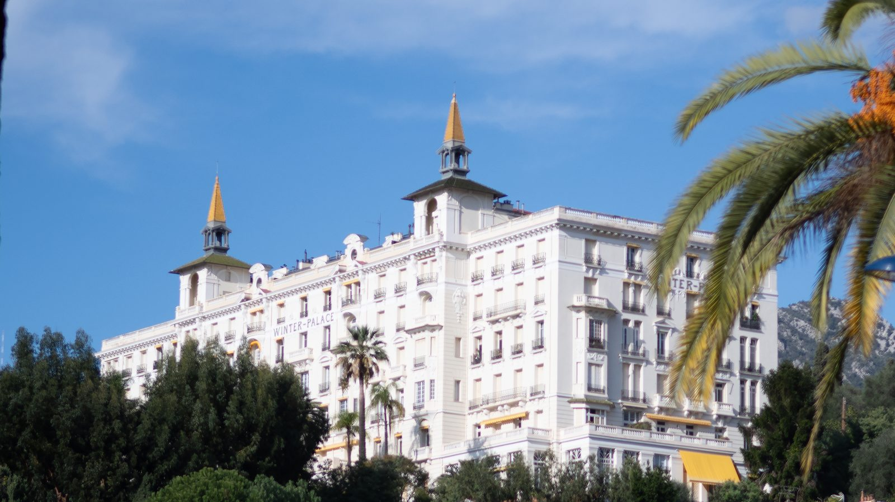

Monaco Made Easy · Путеводители для гостей
Ментона и деревни на холмах
Ментона находится во Франции: это последний город на побережье перед Италией, и из Монако туда едут без пограничного контроля. Здесь яркий старый город, поднимающийся от гавани, длинные пляжи, знаменитые сады и средневековые деревни в горах.
Как добраться из Монако
Поезда со станции Монако — Монте-Карло доходят до Ментоны примерно за 10 минут. Следующая остановка, Ментона-Гараван, ближе к восточной части старого города, гавани и итальянской границе. Прибрежный автобус 600 тоже идёт из Монако в Ментону, но медленнее.
Такси Ментоны — французские. Они могут отвезти вас в Монако, но такси Монако не могут забрать вас в Ментоне, а такси Ментоны — в Монако. Основные стоянки — у вокзала Ментоны, у Казино и у мэрии.
Старый город и базилика
Яркие улочки и лестницы поднимаются от гавани к барочной базилике Сен-Мишель-Аршанж с видом на море. Очень красиво, но круто и много ступенек, поэтому не подходит для инвалидных колясок и детских колясок.


Поднимитесь выше базилики к кладбищу Вьё-Шато на месте старого замка. Его величественные надгробия XIX века принадлежат британским, русским и другим зимним гостям, прославившим Ментону, среди них — Уильям Уэбб Эллис, которому приписывают изобретение регби. Отсюда и лучший вид на город: фото в начале этой страницы сделано здесь. Кладбище действующее, поэтому, пожалуйста, ведите себя тихо и уважительно.

В городе до сих пор стоят роскошные отели, построенные для тех зимних гостей. Winter Palace на авеню Ривьера, построенный в 1901 году на 220 номеров, в 1950-х стал частными квартирами и сегодня внесён в список исторических памятников: любуйтесь им с улицы.

Музеи и сады
- Музей Жана Кокто, коллекция Северина Вундермана: эффектное белое здание Руди Риччотти у набережной закрыто после повреждений от шторма 2018 года. Часть коллекции выставлена в Galerie des Musées во Дворце Европы, у садов Бьове.
- Музей Жана Кокто, Бастион: небольшой музей самого Кокто в крепости XVII века у гавани.
- Дворец Карноле: бывшая летняя резиденция князей Монако, ныне художественный музей с садом цитрусовых.
- Сады Бьове в центре и ботанический сад Валь-Рахме в Гараване, полный тропических растений.


Les Halles, крытый рынок
Крытый рынок Ментоны занимает яркое здание эпохи Belle Époque у подножия старого города, в двух шагах от пляжа. Приходите утром за местным сыром, оливками, колбасами и знаменитыми ментонскими лимонами.


Праздник лимона
Каждый февраль Праздник лимона наполняет сады Бьове гигантскими скульптурами из лимонов и апельсинов. В 2027 году он пройдёт с 13 по 28 февраля, а шествия платформ по Променад-дю-Солей — по воскресеньям днём (14, 21 и 28 февраля). В дни шествий поезда в Ментону переполнены.
Mirazur
Ресторан Мауро Колагреко у итальянской границы имеет три звезды Мишлен. Бронируйте заранее.
Деревни над Ментоной
Автобусы Zest отправляются с автовокзала рядом с вокзалом Ментоны: линия 10 до Сент-Аньес, одной из самых высоких прибрежных деревень Европы, около 780 м (около 35 минут), линия 5 до Горбио и линия 6 до Кастеллара (около 30–35 минут каждая). Ходят несколько раз в день, поэтому заранее проверьте расписание.
В приложении есть карта Ментоны, пешие маршруты, отели, рестораны, туалеты, аптеки и банкоматы, а также деревни и то, как до них добраться.